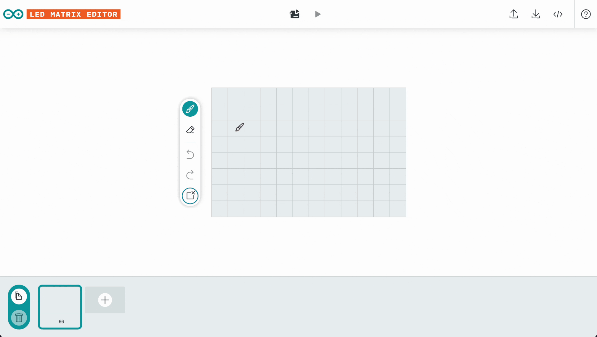
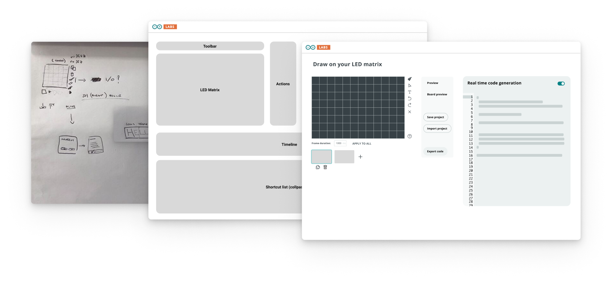
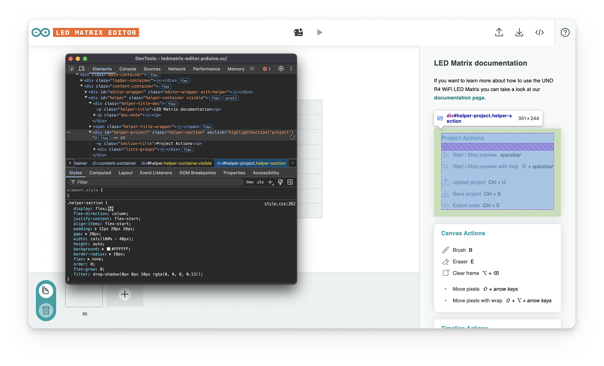
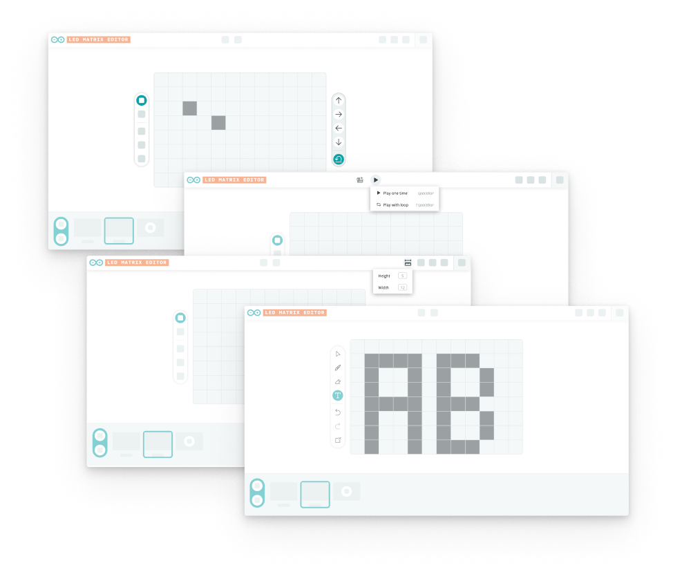

Arduino Labs

With the new Arduino UNO R4 WiFi, users can treat the built-in LED Matrix as an extra interaction point, but code arrays are intimidating for beginners. My goal was to build a tool that lets users design animations naturally, by drawing on an 8×12 matrix, then exporting the code ready to be uploaded to the board.
It needed to be both easy to use and easy to build: the R4 launch was right around the corner, and the time and effort we could allocate were really small.
So, within a few days of work, we shipped the LED Matrix Editor. My part: taking a raw technical tool, and turning it into a real product.
Formal research didn't fit the timeline, but, since good designs require data and knowledge, I ran lightweight interviews with colleagues who matched our user archetypes.
Talking with them I've learned:
- What similar software they've used (to then conduct some benchmarking)
- The main problems they were facing during the design of the animation
- Their main problems with the coding phase
Once we agreed on the core features, I started structuring the IA, then refined it into a high-fidelity wireframe. Since design and development were running in parallel, we made adjustments along the way, collaboratively addressing front-end issues.

sketch → wireframe → hi-fi, in the same weekGiven the extremely close deadline, I also wrote the HTML & CSS for the documentation drawer. A small feature that I considered important, since we had to make some trade off to streamline development, and we had lost affordance on some features.

the documentation drawer, and its CSSThe digital canvas is good, but ultimately the most important UI for our users was on the hardware.
A very crucial feature was the live preview: connect the UNO R4 over USB, upload a simple sketch, and the editor streams every edit to the physical board — what you draw in the browser lights up on the LED matrix, as you draw it.
No compile-and-upload loop — immediate, real feedback across the software/hardware boundary.
Since launch, makers have built tutorials and custom tools referencing this editor.
With more time on the project, I would definitely:
- Better consider the "Maker" archetype in the research — some decisions leaned too much toward users skilled with graphic tools.
- Enhance the affordance of shortcuts and other useful features.
- Bring all interactions to tablet devices — only explored as a concept.
If I could work on phase 2, I would:
- Add Selection & Text input tools
- Add a setting to customize canvas size
- Create a simplified widget for Arduino Cloud

phase-2 concepts